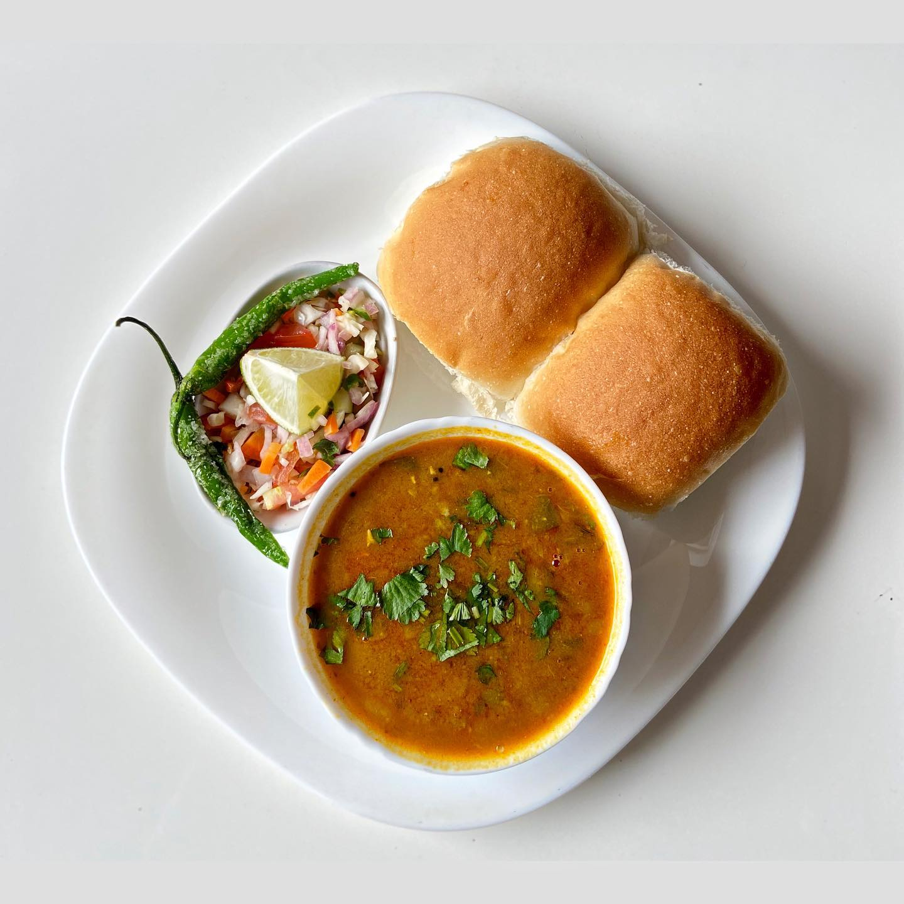
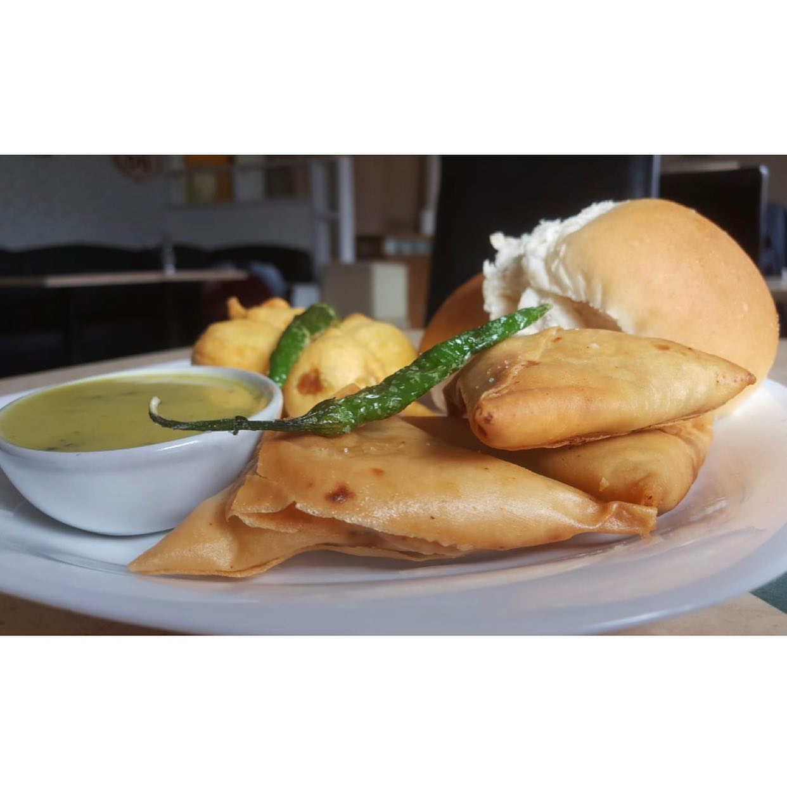
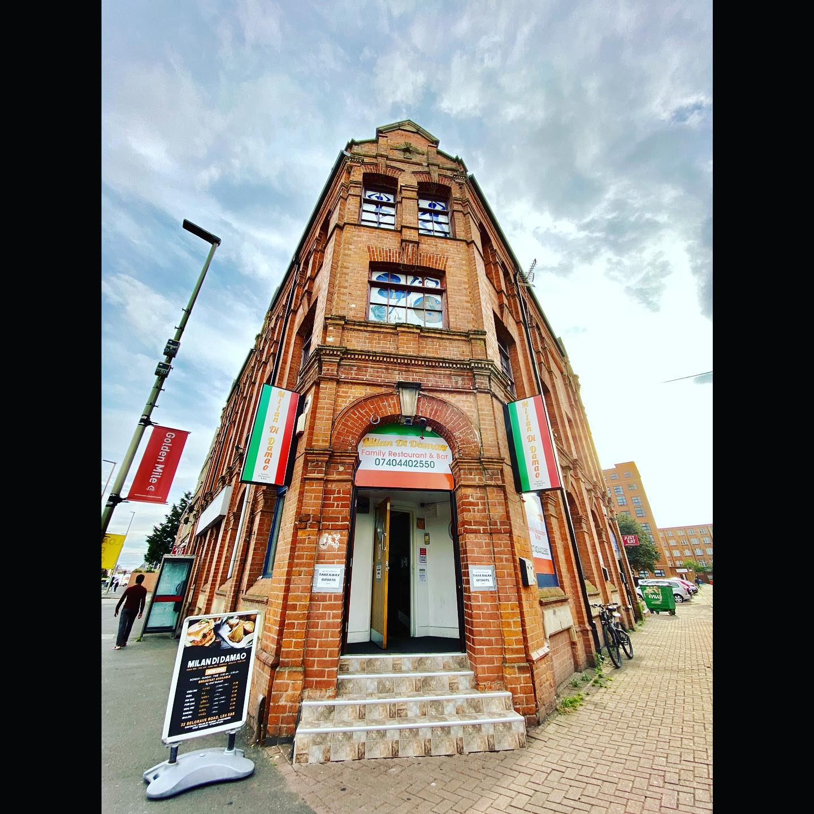

Nasta & chai
Methi Bhajiya
A name from a published nasta graphic.
Published 9 September 2026Family Restaurant & Bar · 32 Belgrave Road
From Damao-style nasta to published evening dishes. Find a name that catches your eye, then keep your questions for Milan together.
Explore the referencesA little inspiration. A clearer conversation.

Damao-style nasta, in Milan’s published story
Start with the names Milan has shared. Some are recent promotional references; the photographs here come from older posts. Ask the team what’s on today.
Find something to ask aboutA name is a good place to start
Search or browse the published references. Add your favourites to an ask list before opening Milan’s public Instagram page.
Nasta & chai
A name from a published nasta graphic.
Published 9 September 2026Nasta & chai
A name from a published nasta graphic.
Published 4 September 2026Nasta & chai
A name from a published nasta graphic.
Published 3 September 2026Nasta & chai
A published nasta reference, also pictured in the archive below.
Published 2 September 2026Nasta & chai
Mentioned with bhajiya in Milan’s primary post.
Published 9 September 2026Indo-Chinese references
Named on the published evening graphic.
Published 27 September 2026Indo-Chinese references
Named on the published evening graphic.
Published 27 September 2026Indo-Chinese references
Named on the published evening graphic.
Published 27 September 2026Indo-Chinese references
Named on the published evening graphic.
Published 27 September 2026Indo-Chinese references
Exact name printed on the graphic. Ask Milan about today’s version.
Published 27 September 2026Indo-Chinese references
Named on the published evening graphic.
Published 27 September 2026Indo-Chinese references
Named on the published evening graphic.
Published 27 September 2026From the archive
Historical photographic reference. Ask what is available now.
Published 16 December 2020No reference matches this search and group. Try another name or reset the filters.
These are dated references, not a live menu or stock list. The September graphic is published as “Veg Indo-Chinese”; that label does not establish ingredients, allergens or dietary suitability. Confirm those directly with Milan. Promotional food graphics are not used here as photographs of actual dishes.
From Milan’s own archive
This photograph was published with the caption “Samosa & Pav Vada” on 16 December 2020. It’s a historical reference, rather than a promise of today’s presentation, portion or availability.
See the original post
Before your next visit
Keep dish names and practical questions in one place. Copy the note for yourself, then use the separate Instagram link to ask Milan directly.
Nothing is sent, ordered or reserved. This list clears when you leave or reload.
Back to the referencesNo references picked yet. Add a dish above to begin.
Milan’s Instagram bio publishes Tuesday–Sunday, 9am–2pm and 5.30pm–10pm; closed Monday. Ask about exceptions.
Your list mixes nasta and evening references. Ask which choices apply to your planned visit.
Open Milan on InstagramYour note is not transferred. You choose what to send.

On Belgrave Road
From Milan’s Instagram bio, checked 20 October 2026. Confirm exceptions and the current dish selection before travelling.
For current questions, use Milan’s public Instagram page. Ask directly about the entrance, access arrangements and any booking or service options you need.
Visit @milandidamaoMilan notes
Try the local newsletter preview.